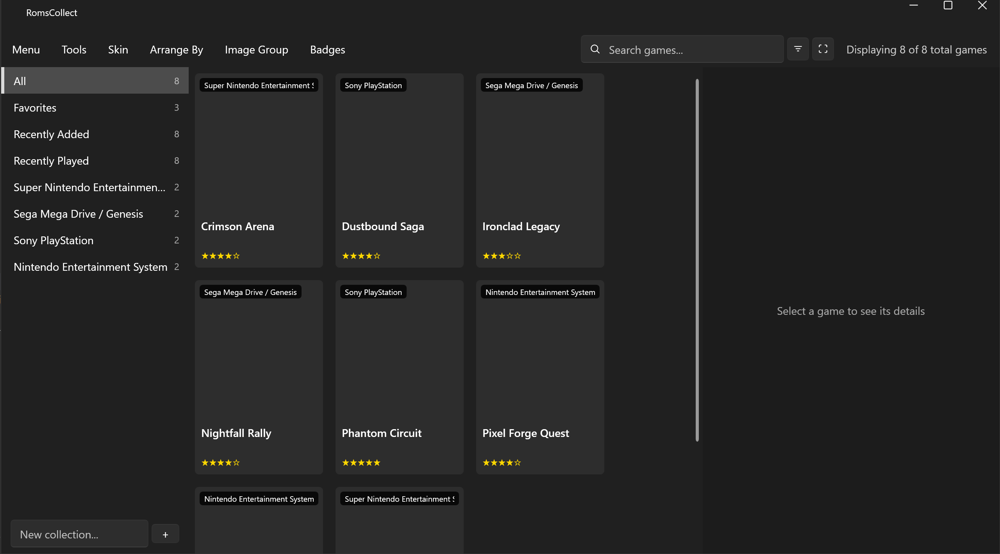

A portable, offline video game collection manager for Windows 10/11 (x64).

What it is
- A browsing frontend — grid, wheel/carousel, or tabular catalog — that launches games
through configurable emulator profiles.
- A full collector's cataloger — condition, purchase info, completeness, personal notes,
tags, and a manually entered collection value. No online pricing lookups of any kind.
Key properties
- Portable — no installer. The application and all of its data live in
one folder; nothing is written outside it and nothing touches the registry.
- Offline — never makes a network request at runtime: no telemetry, no
update checks, no online metadata or cover-art lookups. A game's download-link field
stores a plain URL typed in by the user; clicking it opens the system's default browser
only after an explicit confirmation.
- Windows 10/11, x64 only.
License
Distributed under the GNU General Public License v3.0 or later
(GPL-3.0-or-later). See
LICENSE and
THIRD_PARTY_NOTICES.md
in the repository.